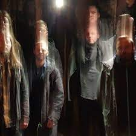
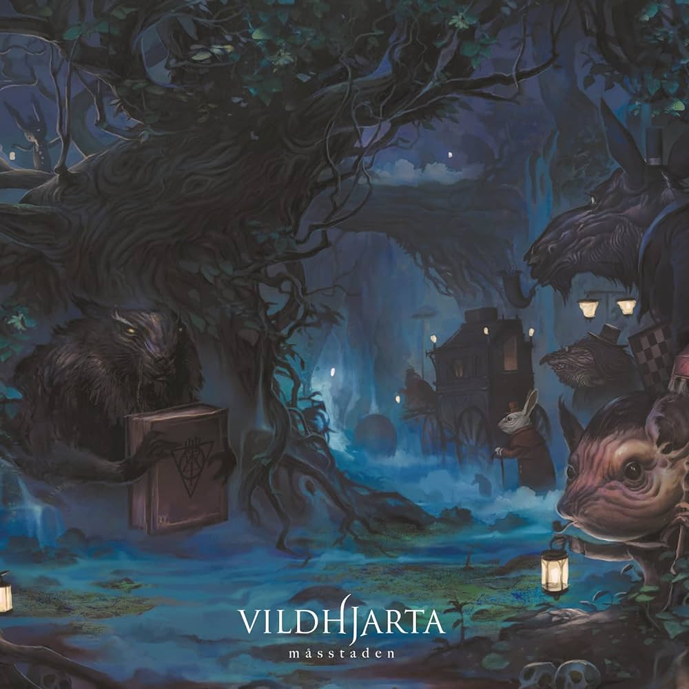
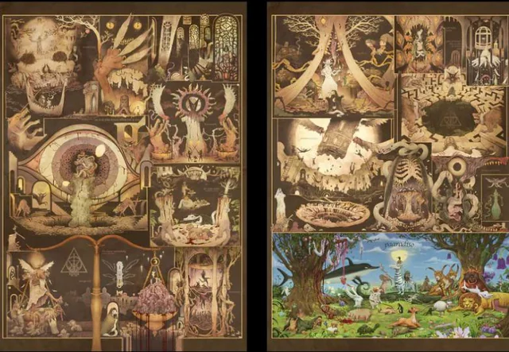

Vildhjarta, band svedese nata nel 2005

La band
I Vildhjarta sono una band progressive metal svedese nata nel 2005. Il loro sound unico combina chitarre distorte, riff staccati e dissonanti, atmosfere riverberanti e complesse strutture musicali, creando un'esperienza ricca di sfumature e dettagli. Il loro stile ha contribuito a dare nuova linfa al progressive metal, ispirando una nuova generazione di musicisti e aprendo la strada a nuovi suoni e idee. Pur essendo un gruppo progressive, la loro musica riesce ad essere apprezzata anche da chi non è avvezzo al genere.
La musica dei Vildhjarta è caratterizzata da un virtuosismo strumentale e da un'abilità compositiva che si fondono in un'esperienza musicale ricca di sfumature e dettagli. Nonostante la complessità, la loro musica rimane emozionante e coinvolgente, trasmettendo una vasta gamma di sensazioni.
La loro musica è come un viaggio sonoro attraverso paesaggi immaginari, a cavallo di riff impetuosi e melodie evocative, un puzzle musicale complesso e affascinante, dove ogni pezzo si incastra perfettamente per creare un'opera d'arte unica.
Link esterni:
Galleria


tutte le illustrazioni realizzate per ciascuna canzone.